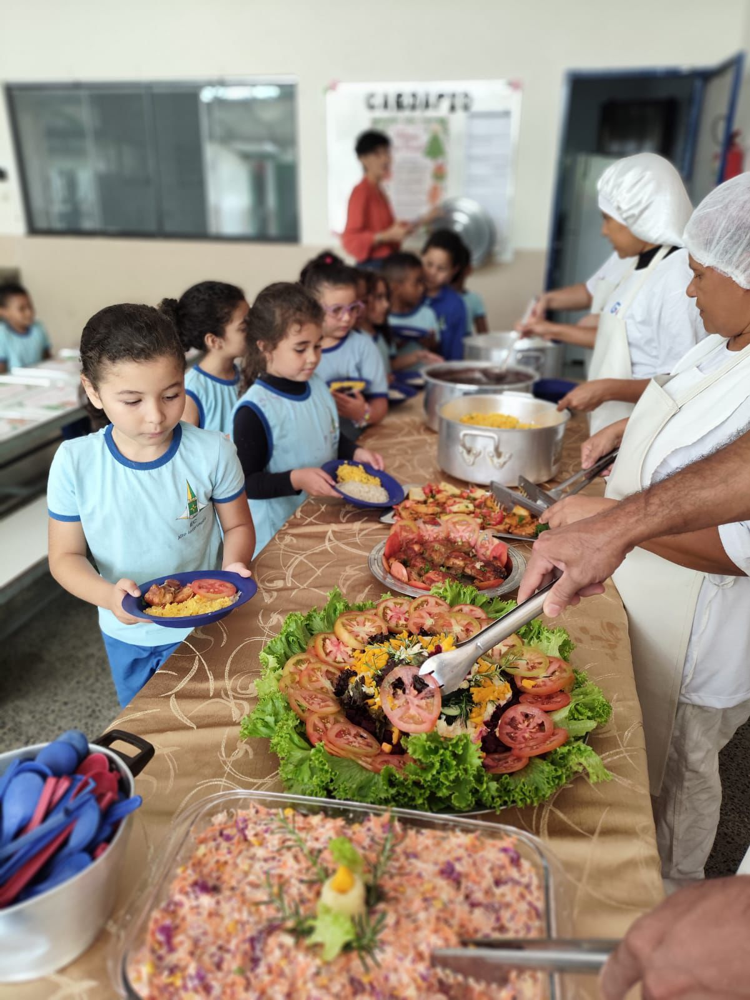
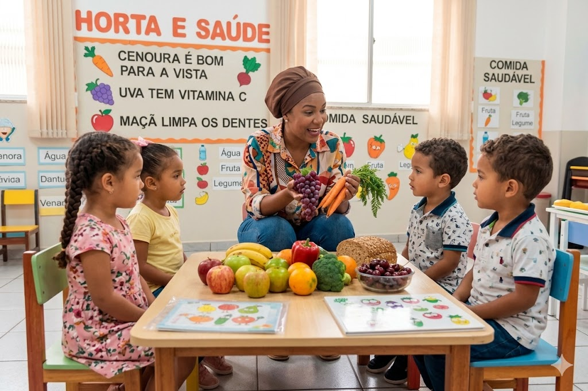
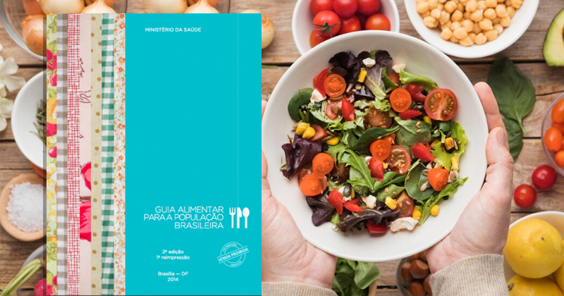
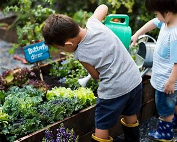
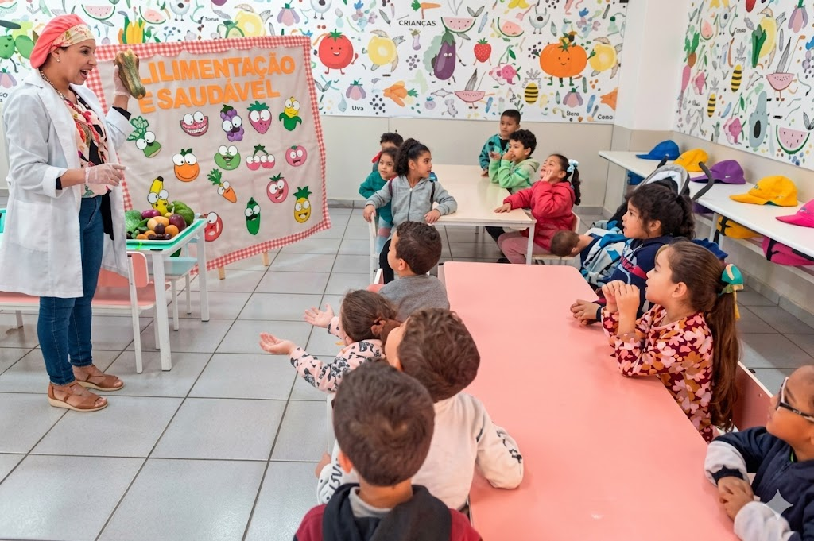
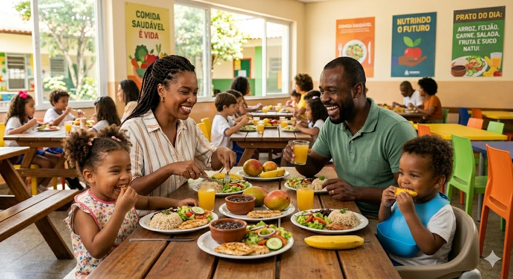
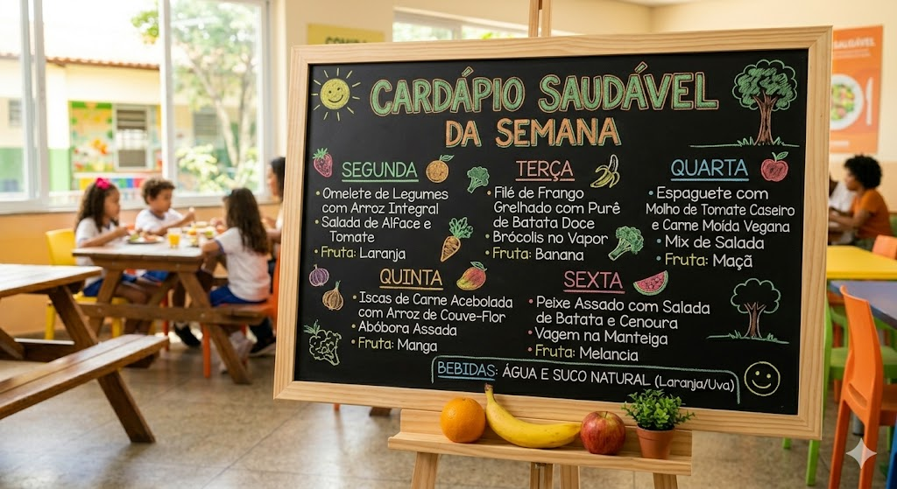
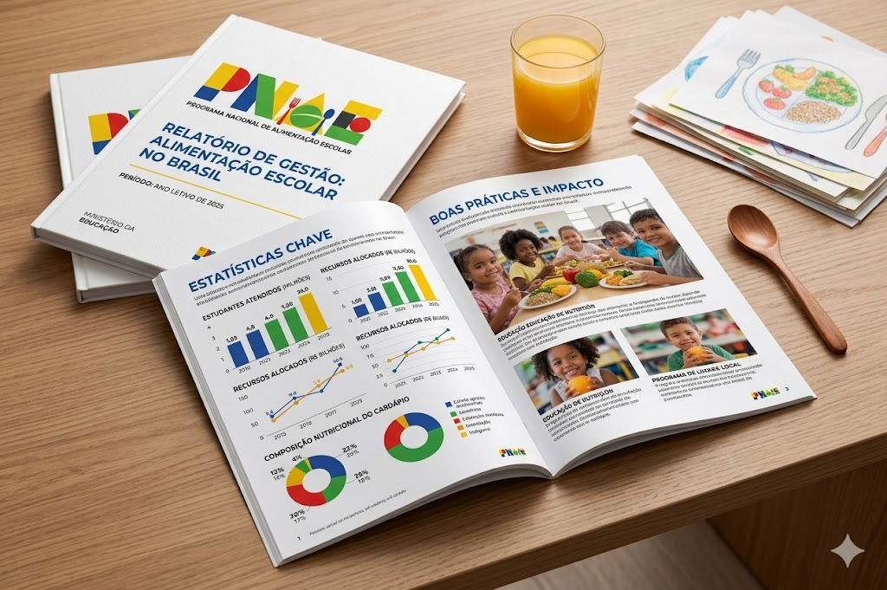

Fundamentos
O porquê do programa — direito, marco legal, BNCC e a revolução do Guia Alimentar.
Manual Pedagógico do Programa de Alimentação Escolar do Distrito Federal (PAE-DF), com foco na Educação Infantil de 0 a 5 anos na rede pública.
Organizamos o manual em cinco áreas temáticas para facilitar a navegação conforme o seu papel na escola e sua pergunta do momento.
O porquê do programa — direito, marco legal, BNCC e a revolução do Guia Alimentar.
O como — matriz pedagógica, estratégias afetivas e atividades por faixa etária.
O rigor técnico — cardápios, papel do nutricionista e avaliação de impacto.
O território — família, Cerrado, agricultura familiar e diversidade cultural do DF.
Complementos da nova edição — Desemparedamento, Nurturing Care, Estudo Nacional de Alimentação e Nutrição Infantil (ENANI), Centro Municipal de Educação Infantil (CMEI) Bom Jesus e aleitamento.
Cada capítulo foi desenhado para ser lido isoladamente ou em sequência. Escolha por onde começar.

Direito, não favor — o programa como currículo vivo de 0 a 5 anos.
Ler capítuloTimeline interativa: de 1955 à Resolução FNDE nº 4/2026.
Ler capítulo
Base Nacional Comum Curricular (BNCC): 6 direitos de aprendizagem e 5 campos de experiência na mesa.
Ler capítulo
Educação Alimentar e Nutricional (EAN): classificação NOVA em 4 grupos · reducionismo × prática integral.
Ler capítuloPNAE × BNCC × EAN — e calendário anual do ano letivo do DF.
Ler capítulo
Oito estratégias afetivas — prontas para usar na próxima semana.
Ler capítulo
Cinco momentos pedagógicos do nutricionista do PNAE.
Ler capítulo
O triângulo que alimenta a infância no DF — Cerrado e RIDE.
Ler capítulo
Res. FNDE nº 4/2026 · proibidos, restritos e regra especial até 3 anos.
Ler capítuloPropostas lúdicas para bebês, creche e pré-escola.
Ler capítulo
Seis instrumentos · quatro indicadores de resultado.
Ler capítuloDesemparedamento · Nurturing Care · ENANI 2019 · CMEI Bom Jesus · aleitamento.
Ler capítulo